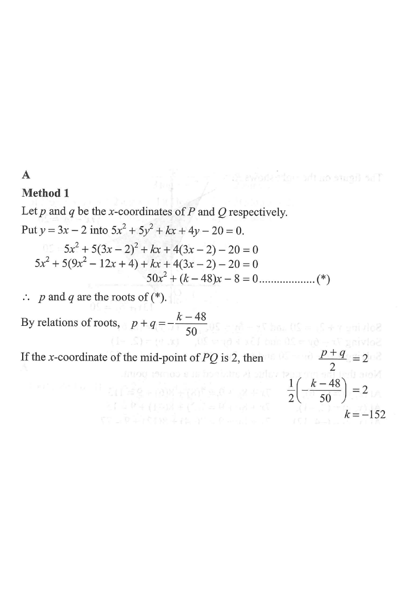

Topic 12 — Coordinate Geometry · Line & Circle Intersection
Let \(k\) be a constant. The straight line \(3x-y-2=0\) and the circle \(5x^2+5y^2+kx+4y-20=0\) intersect at the points \(P\) and \(Q\). If the \(x\)-coordinate of the mid-point of \(PQ\) is \(2\), find \(k\).

From the line, make \(y\) the subject:
$$y = 3x-2$$Substitute into \(5x^2+5y^2+kx+4y-20=0\):
$$5x^2+5(3x-2)^2+kx+4(3x-2)-20=0$$ $$5x^2+5(9x^2-12x+4)+kx+12x-8-20=0$$ $$50x^2+(k-48)x-8=0 \quad \cdots (*)$$By the relations of roots of \((*)\):
$$p+q = -\frac{k-48}{50} = \frac{48-k}{50}$$The \(x\)-coordinate of the mid-point of \(PQ\) is \(2\):
$$\frac{p+q}{2}=2 \;\Longrightarrow\; p+q=4$$ $$\frac{48-k}{50}=4 \;\Longrightarrow\; 48-k=200$$ $$k = -152$$With the \(x\)-coordinate \(2\) on the line \(3x-y-2=0\):
$$3(2)-y-2=0 \;\Longrightarrow\; y=4$$So the mid-point of the chord is \(M(2,4)\).
Write the circle in centre–radius form. Divide by \(5\):
$$x^2+y^2+\frac{k}{5}x+\frac{4}{5}y-4=0$$Centre \(O\left(-\dfrac{k}{10},-\dfrac{2}{5}\right)\), i.e. \(O\left(\dfrac{76}{5},-\dfrac{2}{5}\right)\) when \(k=-152\).
Since the line joining the centre to the mid-point of a chord is perpendicular to the chord:
$$\text{slope of }OM \times \text{slope of }PQ = -1$$ $$\frac{4-\left(-\frac{2}{5}\right)}{2-\left(-\frac{k}{10}\right)}\times 3 = -1$$Solving gives \(k=-152\), confirming our answer. ✓
Question. The straight line \(y=2x-1\) and the circle \(x^{2}+y^{2}+kx+3y-5=0\) intersect at the points \(P\) and \(Q\). If the \(x\)-coordinate of the mid-point of \(PQ\) is \(1\), find \(k\).